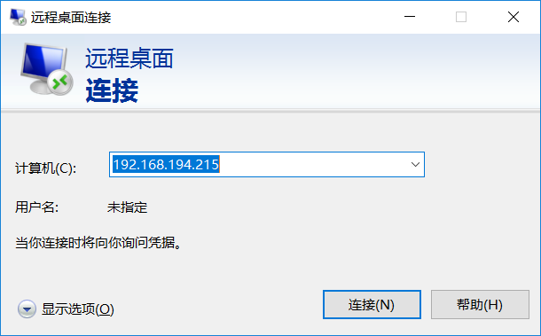

win10远程桌面连接Ubuntu20.4
一、内网穿透
1. 使用ZeroTier创建网络
2. 设备安装ZeroTier客户端，加入网络
2.1 linux设备安装
1、在线安装zerotier
curl -s https://install.zerotier.com/ | sudo bash
2、添加开机自启
$ sudo systemctl enable zerotier-one.service
3、启动zerotier-one.service
$ sudo systemctl start zerotier-one.service
4、加入网络
$ sudo zerotier-cli join 网络识别码
2.2 Windows设备安装（略）
2.3 在ZeroTier上同意设备加入网络
二、Ubuntu安装xrdp
1、安装 xrdp
sudo apt-get install xrdp
2、开启rdp服务
systemctl start xrdp
3、使 rdp 开机自启
systemctl enable xrdp
遇到问题，连接黑屏
修改配置：
sudo vi /etc/xrdp/startwm.sh
添加以下两句
unset DBUS_SESSION_BUS_ADDRESS
unset XDG_RUNTIME_DIR
在此处上面添加
if test -r /etc/profile; then
. /etc/profile fi
重启 xrdp 服务：
sudo systemctl restart xrdp
三、Windows开启远程桌面
3.1 输入ZeroTier提供的IP地址

3.2 连接成功
四、使用Ubuntu原生主题
如果不做任何配置，启动之后的桌面是非常别扭的，因为是Gnome的原始桌面，没有左侧的任务栏，窗口也没有最小化按钮，等等一些列问题。解决方案也很简单：
1. 添加配置文件
vim ~/.xsessionrc
添加：
export GNOME_SHELL_SESSION_MODE=ubuntu
export XDG_CURRENT_DESKTOP=ubuntu:GNOME
export XDG_CONFIG_DIRS=/etc/xdg/xdg-ubuntu:/etc/xdg
2. 重启xrdp服务
sudo systemctl restart xrdp.service
此时再连接，你将得到与原生桌面完全一样的效果！